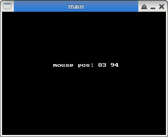

Steward
分享是一種喜悅、更是一種幸福
程式語言 - Golang - SDL 2.0 - Mouse Event
參考資訊：
https://github.com/veandco/go-sdl2
https://github.com/veandco/go-sdl2-examples
https://pkg.go.dev/github.com/veandco/go-sdl2#section-readme
初始化
$ go version
go version go1.24.4 linux/amd64
$ go mod init main
main.go
package main
import (
"fmt"
"github.com/veandco/go-sdl2/sdl"
"github.com/veandco/go-sdl2/gfx"
)
func main() {
var running bool
sdl.Init(sdl.INIT_EVERYTHING);
defer sdl.Quit()
window, _ := sdl.CreateWindow("main", 0, 0, 320, 240, sdl.WINDOW_SHOWN);
defer window.Destroy()
renderer, _ := sdl.CreateRenderer(window, -1, sdl.RENDERER_ACCELERATED);
renderer.Clear()
defer renderer.Destroy()
renderer.Clear()
renderer.Present()
running = true
for running {
for event := sdl.PollEvent(); event != nil; event = sdl.PollEvent() {
switch t := event.(type) {
case *sdl.MouseMotionEvent:
renderer.Clear()
gfx.StringColor(renderer, 100, 100, fmt.Sprintf("mouse pos: %d %d", t.X, t.Y), sdl.Color{R:255, G:255, B:255, A:255})
renderer.Present()
}
}
sdl.Delay(100)
}
}
執行
$ go mod tidy $ go run -v main.go
